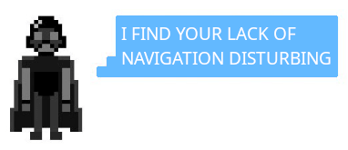

// Add the new slick-theme.css if you want the default styling
StratocanSolutions
HOME
SPONSORS
BLOGS
DONATE
StratocanSolutions
SPONSORS
BLOGS
DONATE
404: oof page not found
Sorry the page you're looking for cannot be found.
Back to the main page
